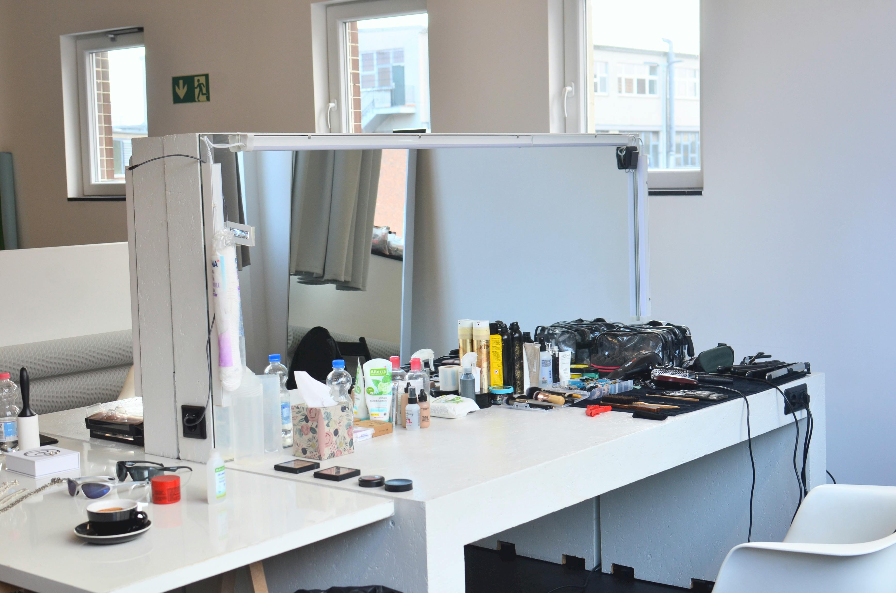
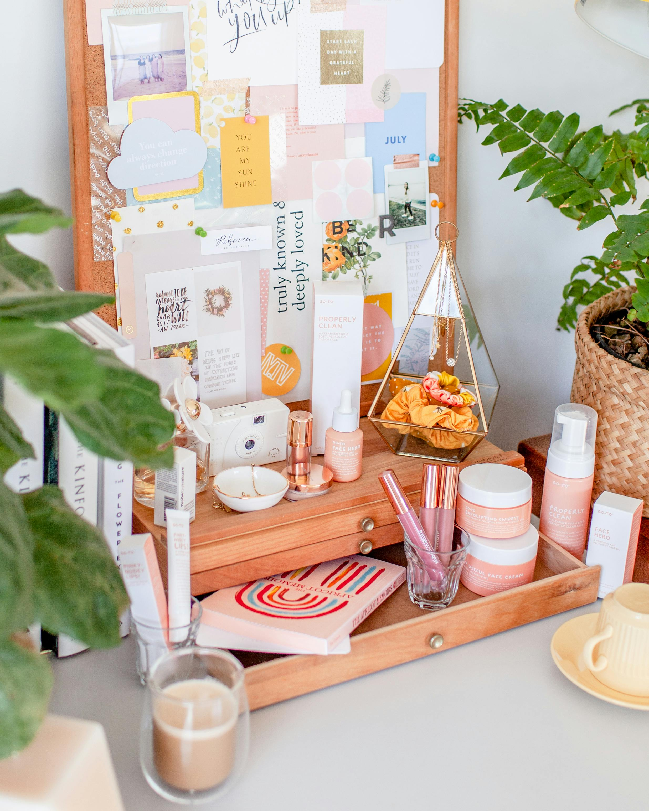
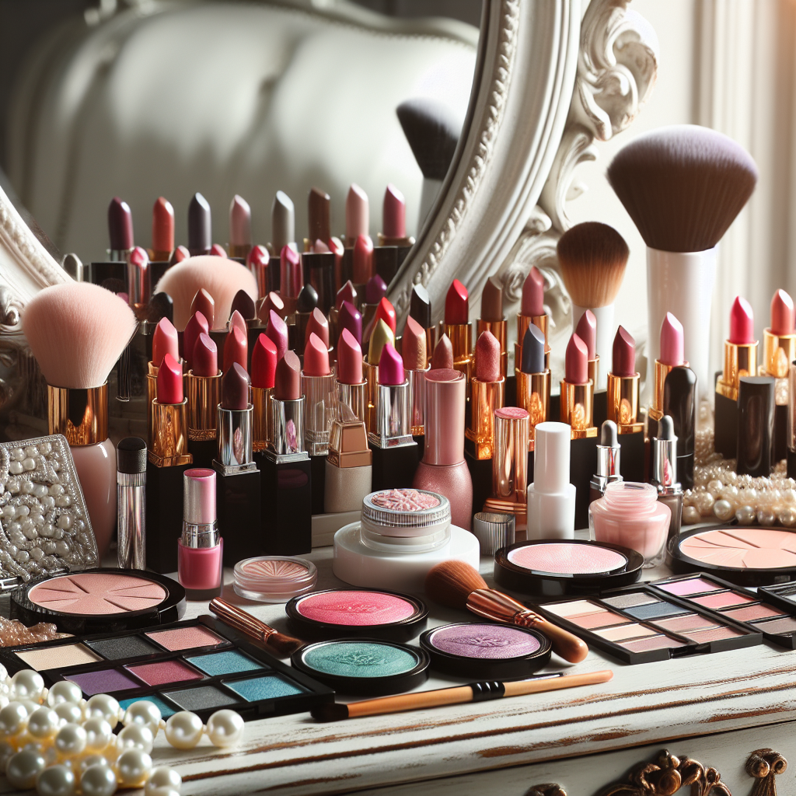

THE COMPLETE BEAUTY GUIDE BY ALEXA KOCUR:
Everything you need to know about makeup and how to get started
Makeup is something that people often question but no one ever knows where to start. My name is Alexa Kocur and this website is here to help anyone that is looking for the perfect makeup routine.
I started getting into makeup just two years ago, I knew I wanted to start doing my makeup but I was so confused on where to start. If you walk into your local beauty store such as Sephora or Ulta as a beginner makeup user, you are bound to be confused. There is so much makeup on the market that the average person doesn't know about. This website is here to guide you through the process of getting into using makeup. How to start what to do and not to do and I will be including my favorite products as well as products to stay away from.



Here are some bullet points that I have complied to help your makeup journey be less stressful:
A positive attitude:
Makeup is hard, it is far from easy – you need patience and a positive attitude. When I started this new hobby and started buying these products, it took a lot of trial and error to figure out what worked for me. Be open to new products and dont be scared to ask for help from friends.
Figure out what your style is:
Makeup is art, it is the way you express yourself. Figure out what type of makeup you like. There are tons of different styles of makeup out there. Look online at reference photos and try to visualize that makeup look on yourself. Ask yourself these questions: Do you like natural makeup, what type of finish do you want on your face? Glowy finish or more of a matte finish?
Price Range:
You want to keep in mind that makeup is expensive. Ask yourself if you are willing to buy more high end makeup or drugstore makeup. If you are just starting, I recommend using drugstore makeup because honestly it is just as good.